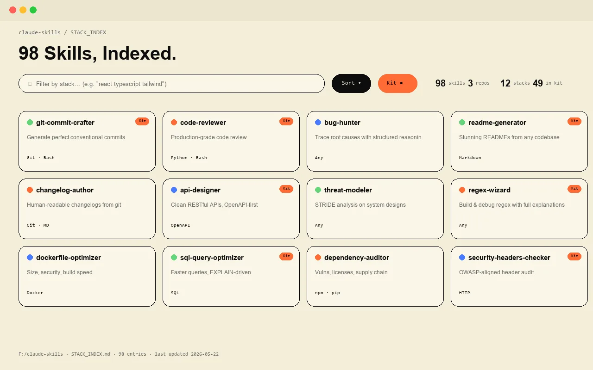

Tools Public · 2026 Own product
claude-skills.
I built claude-skills after rediscovering the same Claude Code workflow tricks three times. Now it's a three-repo bundle: a stack-indexed library of 98 skills, a curated 49-skill kit, and a tips-and-tricks repo. For builders who want fewer keystrokes.

The problem.
Claude Code skills are scattered across Anthropic docs, community gists, blog posts, and random GitHub repos. Builders re-invent the same 20 skills (commit-crafter, code-reviewer, retro-pattern-analyzer) every week because nobody indexed them. The skills market has no Yellow Pages.
What I built.
- claude-skills. The stack index — 98 skills, JSON-indexed, with a stack annotation per skill so you can grep for "React + TypeScript + Tailwind" and find the right one.
- claude-skills-kit. A hand-curated 49-skill pack for solo builders — the ones I actually use, with notes on when each shines.
- claude-tips-and-tricks. Configuration recipes, hook patterns, slash-command idioms — the meta-knowledge that doesn't fit inside a single skill.
- Markdown-first. Every skill is a single SKILL.md. No build, no DSL, no schema lock-in. Diffable in plain git.
- One-line install. Each repo has a Bash installer that drops skills into
~/.claude/skillswith no path surgery.
How I shipped it.
- Audit + index first. Wrote a Python audit that crawls all known skill sources and produces STACK_INDEX.md.
- Curation second. The "kit" is opinionated — only skills I'd actually open in a fresh project.
- Plain Markdown, always. No YAML schema beyond frontmatter. Skills are readable by humans first, machines second.
- Three repos, one mental model. Stack = everything indexed. Kit = curated. Tips = meta. Each pulls its own weight.
Fewer keystrokes per shipped feature.
— the success metric
Like what you read? I can ship this for you.
Send a one-line scope and I'll quote within 24h. Three engagement shapes — fixed-price MVP, embeddable widget, or maintenance retainer.